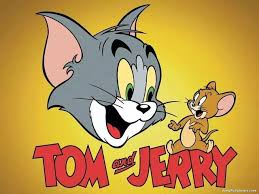

- Origin
- Characters
- Videos

Tom and Jerry is an American animated series of comedy short films created in 1940 by William Hanna and Joseph Barbera. Best known for its 161 theatrical short films by Metro-Goldwyn-Mayer, the series centers on a rivalry between the title characters Tom, a cat, and Jerry, a mouse. Many shorts also feature several recurring characters.